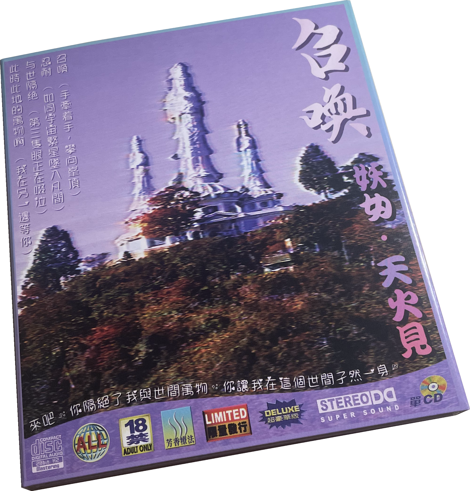

Nobody really owns their media anymore—movies, music, games—all replaced by an overabundance of silly streaming services. I think it's important to have the rights to a media file that cannot be taken away. Here's my collection of physical and digital music.
Namco
塊フォルテッシモ魂
HOLY PHOQUE. IS THERE ANYTHING BETTER?
塊は魂

★ Katamari Holiday ★
Vangelis
Soil Festivities
★ Movement 1 ★
Antarctica
ｄｏｇｇｉｅｓ OwO
Blade Runner
memories of green—unequivocally brings tears to my eyes
★ Blade Runner Blues ★ Memories of Green ★
テレパシー
アンドロメダ

★ 空に光 ★
召喚

猫 シ Corp.
OASYS ♁ 博物館

テレパシー & 猫 シ Corp.
Building a Better World

Vangelis / Blade Runner-esque〜
Windows 96
Enchanted Instrumentals and Whispers

Dated New Aesthetic

Windows's best!
★ How he found the world all strange and the world found him strange likewise ★
desert sand feels warm at night
夢の砂漠